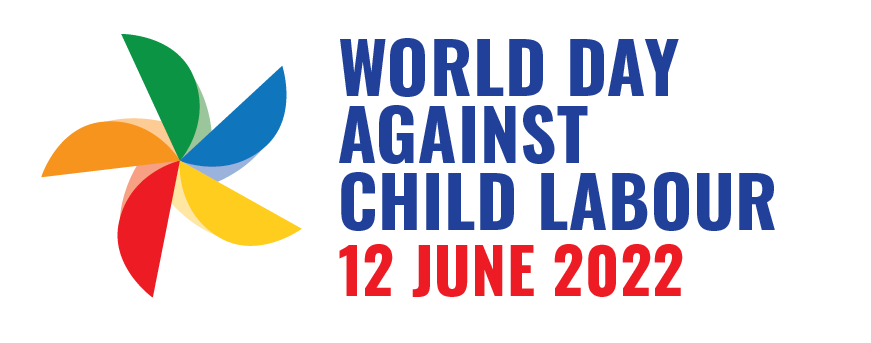

With a problem this big, extreme countermeasures are needed. In 2021, th e ILO, in partnership with the global alliance, declared the International Year against Child Labour. Both with goals to completely end the problem by 2025. In addition, there is currently only one day against this crime, June 12
disponível em: https://www.iuf.org/news/world-day-against-child-labour-2022-169-million-children-denied-their-right-to-childhood/
What we can do starts with simple acts, like never buying anything from children, so we don't cycle to crime. And in addition, we must also report, dialing 100 or talking on the website of Work Ministery. With simple attitudes we can make the world much better